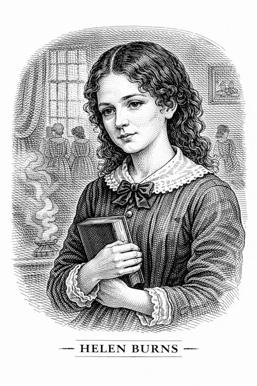

Helen Burns

Helen es una estudiante en Lowood, unos años mayor que Jane. Es una niña muy inteligente, culta y con una gran fortaleza interior. Su aspecto físico es descuidado, por lo que suele ser castigada a menudo. A pesar de ello, Helen es una niña muy feliz y optimista, que siempre está dispuesta a ayudar a los demás.
Personalidad e impacto en la vida de Jane
La muchacha representa el estoicismo. Su filosofía se resume en la frase que le dice a su amiga: "Es mucho mejor aguantar en silencio una injusticia que cometer una acción apresurada cuyas consecuencias sean deplorables". A diferencia de Jane, que quiere luchar contra todo, Helen cree en el perdón universal. No le guarda rencor a la señora Scatcherd, por muy cruel que sea con ella, pues cree que su actitud es una prueba para su paciencia y para su fe.
Cuando llega a Lowood, Jane siente una profunda rabia hacia su tía, pero Helen le enseña que esa rabia solo le está haciendo daño a ella. Gracias a su amiga, Jane consigue aprender a controlar sus impulsos y a perdonar a los demás, mirando a sus enemigos con lástima en vez de odio.
Helen le da a Jane su primera noción de una fe basada en el amor y no en el castigo (contrarrestando el Dios vengativo de Brocklehurst).
Su muerte es el primer gran duelo de Jane. La escena en la que ambas duermen juntas por última vez y Helen muere en brazos de Jane es el momento más desgarrador de la infancia de la protagonista. La palabra "Resurgam" (Resurgiré), que Jane manda grabar en su tumba años después, simboliza la esperanza que Helen le dejó.
Importancia del personaje
Helen es el espejo donde Jane ve lo que significa la verdadera fuerza interior. Sin embargo, Charlotte Brontë también sugiere que el camino de Helen, la resignación total, es incompatible con la vida terrenal. Helen tiene que morir porque es "demasiado buena para este mundo", mientras que Jane debe aprender a equilibrar la paciencia de Helen con su propio deseo de vivir y ser amada.
Es la mártir: representa la sabiduría prematura y la victoria del espíritu sobre el sufrimiento físico. Su nombre, "Burns" (arder), hace referencia a cómo su vida se consume rápidamente debido a la intensidad de su fe y su enfermedad.